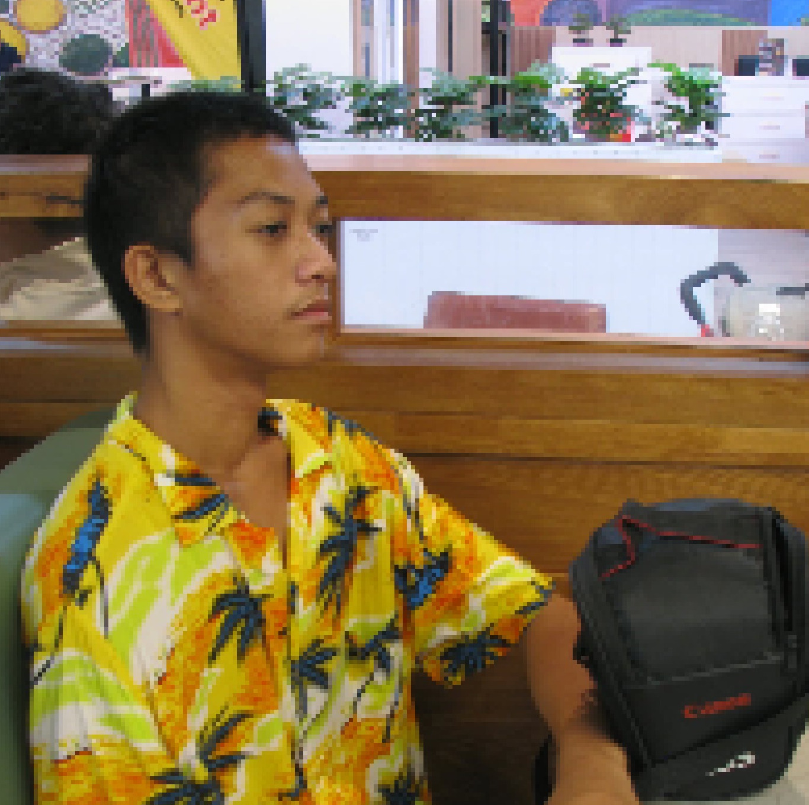

Annoying ads

Annoying ads

Languages
-> Javascript
-> Python
-> Java (little)
-> C (little)
Arch Linux
Yeah arch(dwm) and neovim btw.
Arch user since
2026-03-13 15:50:36 +0800
or 4 month(s) and 7 day(s)
Technologies (im active)
-> MySQL
-> SQLite
-> Node.js
-> Express.js
Technologies (im active)
-> React
-> CSS
-> HTML (little)
-> Next.js (little)
What programming language do you the most experience with?
What programming language do I mainly use?
What do I mostly specialize in?
What's you're programming setup?
Kew
It's a terminal music player ;)
Do you use AI?
Antigravity CLI
The lightweight Terminal User Interface (TUI) surface of Antigravity. It brings the same core agentic capabilities as Antigravity 2.0 (such as multi-step reasoning, multi-file editing, tool calling, and conversation history) directly to your terminal.
Warning!
Switch to LINUX, WINDOWS will consume itself soon if they let capitalism have the way instead of the customer. This is for the good so Microsoft would realize that Linux is a competitor and would actually make WINDOWS work for the people again.